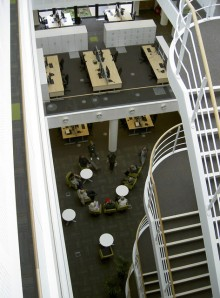

From 1 October 2011, the Environment Agency has take on a new role as the delivery body for the Government’s climate change adaptation programme in England.
As part of the programme, the Environment Agency and Climate UK have developed a new partnership agreement to ensure that local partners can access support to help them take action to increase resilience. The partnership aims to ensure that the new programme builds on the existing work and networks already established under the nine Climate Change Partnerships in England. Climate UK, working with the Environment Agency, will help facilitate the programme, building capacity and delivering practical solutions to help businesses, organisations, and communities adapt.
About Climate UK
Climate UK (incorporated as Climate Partnerships UK CIC) is the recently established umbrella group for the nine English Climate Change Partnerships (CCPs), and includes representation from the devolved administrations. Through Climate UK, the partnerships aim to provide an improved service to local areas by sharing their resources, experience, knowledge and technical expertise across a wide range of sectors. Climate UK will also seek to accelerate activity through securing resources to invest in local and national climate change initiatives.
The Environment Agency’s new programme aims to ‘increase resilience in key sectors to climate risks’ and will run from September 2011 to March 2015. It will be targeted across 6 key themes:
- infrastructure
- built environment
- business
- natural environment
- health
- local government
The programme will be available to organisations across the private, public and third sectors who have a stake in increasing the resilience of key assets and services.
Continuing the legacy
The Environment Agency and the Climate Change Partnerships have a long track record of working together to deliver shared outcomes on adapting to climate change. The new partnership agreement with Climate UK is for 18 months, until March 2013, when the Environment Agency will be reviewing delivering arrangements in the light of the Government’s National Adaptation Programme (due in Spring 2013).
Get involved
EA is keen to to develop a programme that gives you the information and support that you and your customers need to help adapt to climate change. Please let them know what you need by completing a short survey that can be found at https://web.questback.com/theenvironmentagency/atccp/
Further information
If you have queries about the Environment Agency’s future adaptation advice service for England, please visit www.environment-agency.gov.uk/research/132323.aspx
or email Yuen-Wan.Pang@environment-agency.gov.uk
If you have specific questions relating to Climate UK, please contact Kristen.Guida@Climate.uk.net
Alternatively, if you would like to know more about what is happening in Yorkshire and Humber then contact Jon.Clubb@lgyh.gov.uk